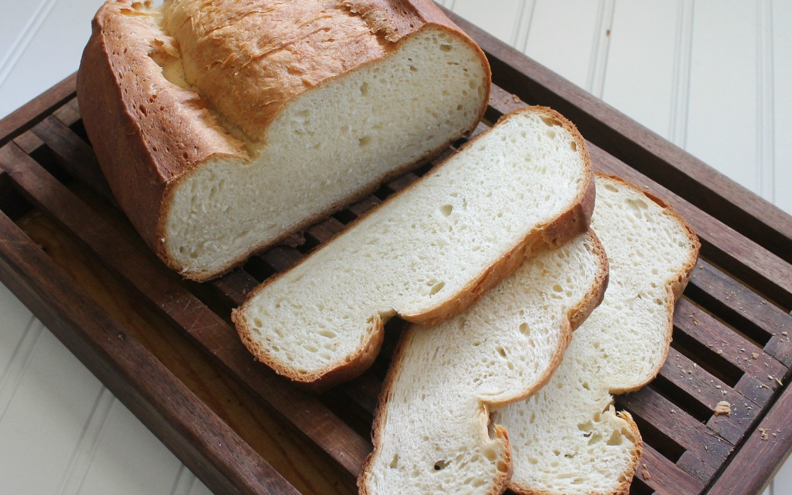

Homemade Bread
If you'd like to learn how to bake bread, here's a wonderful place to start. This easy white bread recipe bakes up deliciously golden brown.

Total Time:
Prep: 20 min+
rising Bake:30 min+ cooling
Makes: 2 loaves (16 slices each)
Ingredients:
- 1 package (1/4 ounce)
active dry yeast
- 2-1/4 cups
warm water
(110° to 115°)
- 1 tablespoon
salt
- 2 tablespoons
canola oil
- 6-1/4 to 6-3/4 cups
all-purpose flour
Directions:
- In a large bowl, dissolve yeast in warm water. Add the salt, oil and
3 cups flour. Beat until smooth. Stir in enough remaining flour, 1/2 cup at a
time, to form a soft dough.
- Turn onto a floured surface; knead until smooth and elastic, 8-10 minutes.
Place in a greased bowl, turning once to grease the top. Cover and let rise in
a warm place until doubled, about 1-1/2 hours.
- Punch dough down. Turn onto a lightly floured surface; divide dough in half.
Shape each into a loaf. Place in two greased 9x5-in. loaf pans. Cover and let
rise until doubled, 30-45 minutes.
- Bake at 375° for 30-35 minutes or until golden brown and bread sounds hollow
when tapped. Remove from pans to wire racks to cool.
Nutrition Facts:
1 slice: 102 calories, 1g fat (0 saturated fat), 0 cholesterol,
222mg sodium,20g carbohydrate (1g sugars, 1g fiber), 3g protein.